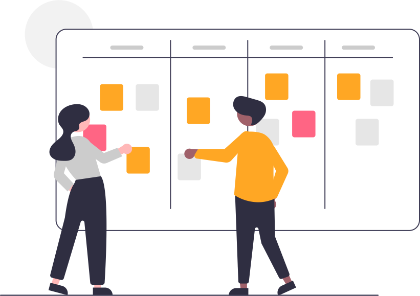

Cahier de texte
Avertissement :⚓︎

 Ce site s'adresse au groupe des élèves de première du lycée Notre Dame du Mur qui suivent l'enseignement de spécialité Numérique et Sciences Informatiques.
Ce site s'adresse au groupe des élèves de première du lycée Notre Dame du Mur qui suivent l'enseignement de spécialité Numérique et Sciences Informatiques.
Autres liens du groupe :⚓︎

Le 01/06⚓︎
Exploration de solutions pour déployer, publier et maintenir un classeur de NSI en ligne :
Pour le 25/05⚓︎
-
faire et remettre les notebook Algorithmique-Complexite et Algorithmique-Tri ;
-
s'entrainer sur le site Exercices pratiques de NSI pour préparer une évaluation pratique ;
-
Se préparer pour un QCM en particulier sur IHM web, OS Linux, complexité, tri...
Pour le 13/05⚓︎
-
finir et remettre les notebook IHM_Web_Dynamique et IHM_Web_Statique ;
-
s'entrainer sur le site Exercices pratiques de NSI pour préparer une évaluation pratique ;
-
Se préparer pour un QCM en particulier sur IHM web, OS Linux, ...
Révisions pour le 05/05⚓︎
-
s'entrainer sur le site Exercices pratiques de NSI ;
-
regarder les vidéos :
Les 27 et 29/04⚓︎
- faire les activités du notebook IHM_Web_Dynamique et rendre compte de votre travail ;
Le 26/04⚓︎
- faire les activités du notebook IHM_Web_Statique et rendre compte de votre travail ;
Complément :⚓︎
- regarder la vidéo Notions de web et d'interface homme-machine ;
Révisions :⚓︎
-
regarder la vidéo Les dictionnaires en Python ;
-
regarder la vidéo Notion de listes en informatique et application aux images numériques ;
-
regarder la vidéo L'architecture des réseaux et les protocoles de communications
Le 05/04⚓︎
- Correction des activités du notebook Traitement de données en table avec Python (Partie 1) ;
- faire les activités du notebook Traitement de données en table avec Python (Partie 2) et rendre compte de votre travail ;
Le 22/03⚓︎
-
Révisions SNT, initiation au traitement de données en table à l'adresse https://concours.castor-informatique.fr/ avec les codes :
- Séance 1 : tnytsuxu
- Séance 2 : ut7rekw3
- Séance 3 : 3fhjqjnj
-
faire les activités du notebook Traitement de données en table avec Python (Partie 1) et rendre compte de votre travail ;
Le 18/03⚓︎
- Evaluation par QCM
Le 15/03⚓︎
- faire les Exercices sur les listes (tableaux) et rendre compte de votre travail ;
Le 25/02 :⚓︎
- Se connecter sur edublocks avec votre compte Microsoft ECMorlaix, rejoindre la salle de classe 1NSI avec le code
PqKMet faire la tâcheHelloWorld_NSIassigner. - finir les activités du notebook BBCmicrobit-Un_BN_Pour_MicroPython et rendre compte de votre travail ;
-
- commencer les activités des notebooks Les_tableaux et TP_matrices
Les 22 et 23/02 :⚓︎
- faire les activités du notebook BBCmicrobit-Un_BN_Pour_MicroPython et rendre compte de votre travail ;
Le 04/02 :⚓︎
- Evaluation par QCM ;
Les 01 et 02/02⚓︎
- faire les activités du notebook Logique Booleenne et rendre compte de votre travail ;
Complément, exemples de réalisations de fonctions logiques avec des transistors,
reconnaitre les fonctions simulées :- https://tinyurl.com/y6ca4dwn ;
- https://tinyurl.com/y62j9dxj ;
- https://tinyurl.com/y4pmexnc ;
- https://tinyurl.com/yya89b6n ;
- https://tinyurl.com/y56od8rh...
Ces circuits utilisent des transistors bipolaires inventés en 1948. Aujourd'hui le transistor MOS constitue, par sa simplicité de fabrication et ses performances, l'élément de base des circuits intégrés...
Les 26 et 28/01⚓︎
-
Synthèse Réseaux ;
En complément voir la vidéo : L'architecture des réseaux et les protocoles de communications...
-
finir les activités du notebook Terminal et rendre compte de votre travail ;
-
répondre aux questions du notebook Fonction Logique et remettre votre travail ;
Du 18 au 25/01⚓︎
-
finir les activités du notebook Terminal et rendre compte de votre travail ;
Du 11 au 14/01⚓︎
Du 04 au 07/01⚓︎
-
présentation orale des revues de projet collectif Dessiner_ma_rue ;
-
finalisation et remise des travaux en cours...
Le 17/12 :⚓︎
-
Se répartir les tâches restantes afin de finaliser le mini-projet collectif Dessiner_ma_rue durant les vacances et produire une présentation orale de revue de projet pour le 04/01 ;
-
Finir les activités du notebook Fonctions_et_modularisation et le remettre par mail pour le 07/01 ;
-
Finir les activités du notebook d'exploration du module ipycanvas-Le_BN_pour_dessiner et le remettre par mail pour le 07/01 ;
Du 07 au 16/12 :⚓︎
- mini-projet collectif Dessiner_ma_rue sprint 1 ;
Le 03/12 :⚓︎
-
Parcourir le notebook présentant Les_types_construits ;
-
Lire et faire les activités du notebook Fonctions_et_modularisation ;
-
Poursuivre l'exploration du module ipycanvas-Le_BN_pour_dessiner ;
Le 01/12 ;⚓︎
- Poursuite dirigée de la découverte du module ipycanvas-Le_BN_pour_dessiner ;
Le 30/11 :⚓︎
- Correction des travaux ;
Le 26/11 :⚓︎
- QCM03 ;
Les 23 et 24/11 :⚓︎
- Finalisation et remises des travaux engagés ;
Les 16, 17 et 19/11 :⚓︎
-
Publier un projet Web sur Glitch et GitHub à l'aide des langages HTML/CSS/JavaScript : Partager par mail les liens vers votre site et votre dépot.
-
Faire le DM_de_synthese_01 : Reprendre le A coder vous même : du notebook binaire et, en vous inspirant du notebook Display, développer des scripts Python pour générer les chaines de caractères en MarkDown et HTML qui reproduisent un tableau de conversion de décimal en binaire.
-
Poursuivre la découverte du module ipycanvas-Le_BN_pour_dessiner ;
Le 09/11 et pour le 16/11 en autonomie :⚓︎
-
Finir les activités du notebook Chaine-Le_BN_pour_traiter_les_textes_en_machine et le transmettre par mail pour le 16/11 ;
-
Terminer tous les niveaux de l'application PYRATES : -> me transmettre par mail votre code personnel ainsi que le temps et le nombre d'essais qu'il vous faut pour passer chaque niveau... ;
-
Apprendre les langages HTML/CSS/JavaScript pour publier un projet Web sur Glitch et GitHub...
-
Découvrir ipycanvas-Le_BN_pour_dessiner ;
-
Poursuivre les activités de la rubrique Cours et Problèmes sur France-IOI...
Le 22/10 et durant les vacances de la Toussaint :⚓︎
-
Finir les activités du notebook Chaine-Le_BN_pour_traiter_les_textes_en_machine et le transmettre complété par mail pour le 08/11 ;
-
Evoluer de la programmation Scratch vers Python grace à l'application PYRATES : -> me transmettre par mail votre code personnel ainsi que le temps et le nombre d'essais qu'il vous faut pour passer chaque niveau... ;
-
Rejoindre la classe sur https://fr.khanacademy.org/join/U5525Z3A et faire les activités de https://fr.khanacademy.org/computing/computer-programming/html-css...
-
Poursuivre les activités de la rubrique Cours et Problèmes sur France-IOI...
Le 19/10 :⚓︎
Le 15/10 :⚓︎
- Finir et remettre par mail le notebook complété et corrigé des Bases de Programmation en Python3 en tenant compte de toutes les recommandations faites lors de la synthèse ;
Le 13/10 :⚓︎
- Evaluation sur le binaire, l'hexadécimal, les notions de programmations en Python vues à ce stade : QCM02 et sa correction
Les 08 et 12/10 :⚓︎
- Finalisation de la synthèse orale autour des Bases de Programmation en Python3 ;
-> se préparer pour une évaluation par QCM le 13/10 : Binaire, Hexadecimal, Histoire, Python... ;
Le 06/10 :⚓︎
- Finalisation des activités du notebook des Bases de Programmation en Python3 ;
Le 05/10 :⚓︎
- Synthèse orale partielle autour des Bases de Programmation en Python3 ;
- Présentation de python tutor ;
Les 28, 29/09 et 01/10 :⚓︎
- Poursuite des activités Cours et Problèmes d'apprentissage de la programmation en Python...
- Compléter le notebook des Bases de Programmation en Python3 autant que possible et le transmettre en PJ d'un mail à l'adresse eric.madec@ecmorlaix.fr avant le 05/10 ;
Les 21, 22 et 24/09 :⚓︎
- QCM01 et sa correction;
- Découvrir la représentation hexadédimale d'une information binaire -> Compléter le notebook et faire les exercices des activités : A faire vous même n°...
- Poursuite des activités Cours et Problèmes d'apprentissage de la programmation en Python...
Le 17/09 :⚓︎
- Point d'avancement concernant l'apprentissage de la programmation en Python réalisée sur France-IOI : séquence d'instructions, boucle
forsimple et imbriquée -> se préparer pour une évaluation par QCM le 21/09 : Binaire, Histoire, Python ;
Le 15/09 :⚓︎
- Correction des synthèses rendues concernant les mots et dates clefs relevés dans la vidéo : "Petite histoire de l'informatique"
Le 14/09 :⚓︎
- Poursuivre les activités engagées...
Le 10/09 :⚓︎
- Correction et fin de la représentation binaire des nombres entiers positifs -> Reste à programmer un script pour générer au format markdown un tableau de conversion décimal >>> binaire...
Le 08/09 :⚓︎
- Découvrir la représentation binaire des nombres entiers positifs -> Compléter le notebook et faire les exercices de conversion et activités de recherches...
Le 07/09 :⚓︎
- Faire une synthèse des mots et dates clefs relevés dans la vidéo : "Petite histoire de l'informatique" -> à remettre par mail pour le 10/09 ;
- S'inscrire sur France IOI et faire les activités de la rubrique Cours et Problèmes en rejoignant le groupe groupe 1nsi2022-ecmorlaix ;
- Rédiger progressivement un notebook jupyter compte rendu des vos expériences personnelles présentant les principales notions de bases de programmation en Python3 (Séquences d'instructions, variable, entrée (input()), sortie (print()), alternative (if…: elif…: else…:), boucle (for), fonction, liste…) en l'illustrant avec des exemples vus en seconde et sur France IOI...
Le 03/09 :⚓︎
- Accueil, présentation de la matière, -> remplir une fiche d'informations ;
- Installation de l'application Carnets et prise en main d'un notebook jupyter ;
- Visionnage de "Petite histoire de l'informatique" une vidéo réalisée par l'INRIA, -> relever les mots et dates clefs :